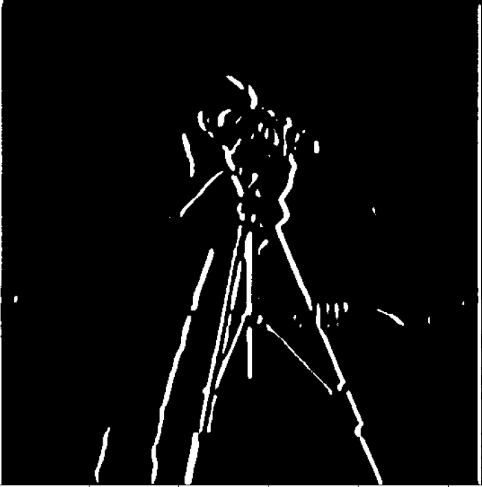

Approach
We take the partial derivative of the image by convolving the image with the finite difference, dx = [1, -1] and dy = [[1], [-1]] vertically.
To develop edges, we binarize the image by thresholding a value and setting to black or white accordingly
We use these derivatives to create a gradient magnitude image which shows the edges, using np.sqrt(dx ** 2 + dy ** 2).
dx filter
dx filter (binarized)
dy filter
dy filter (binarized)
gradient magnitude image
gradient magnitude image (binarized)
We found that the optimal threshold for the binarization was 50
1.2 Derivative of Gaussian Filter
Blurred Approach
We first repeat 1.1 on the image that has been convolved with a Gaussian kernel to blur it. We found a good kernel parameter was k = 10, sigma = 2
Blurred dx filter

Blurred dx filter (binarized)
Blurred dy filter
Blurred dy filter (binarized)
Blurred gradient magnitude image
Blurred gradient magnitude image (binarized)
I notice that in these images much of the noise has been removed, which results in cleaner edges. The edges themselves are also thicker
Derivative of Gaussian Filter Approach
We first convolve the gaussian kernel with dx = [1, -1] and dy = [[1], [-1]] respectively to create two DoG filters. We then convolve the original image with these filter to create the dx and dy blurred. Again, the gradient is calculated
DoG dx filter
DoG dx filter (binarized)
DoG dy filter
DoG dy filter (binarized)
DoG gradient magnitude image
DoG gradient magnitude image (binarized)
The images are virtually identical.